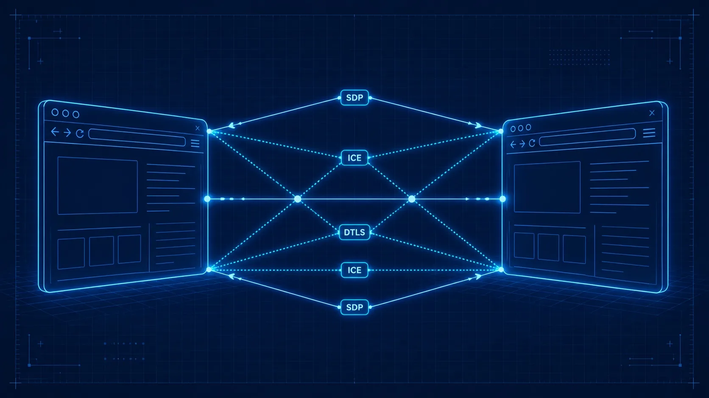

A BookBank Blueprint
WebRTC
The builder's deep dive into real-time communication on the open web: peer-to-peer audio, video, and data straight from the browser, no plugins, no middleman. From first principles to production-grade architecture.

A premium technical blueprint illustration: two glowing browser window outlines facing each other across a dark navy background, connected by luminous cyan signal lines that form a peer-to-peer mesh pattern. Faint engineering grid lines cover the background. Small protocol labels (SDP, ICE, DTLS) float along the signal paths like annotations on a schematic. Cool navy-to-midnight gradient, cyan and electric blue palette with white highlights, generous whitespace, crisp vector geometry, no text baked in. Target size ~1280×720px, 16:9 landscape.
Generate this with your image agent, then drop the file here.
Contents
- Real-Time on the Open Web why WebRTC exists
- The Network Beneath P2P · NAT · UDP · latency
- The API Surface getUserMedia · PeerConnection · DataChannel
- Signaling: The Out-of-Band Dance why it exists · WebSocket server
- SDP & Session Negotiation offers · answers · perfect negotiation
- ICE, STUN & TURN NAT traversal · candidates · relay
- Audio & Video: Capture to Render codecs · constraints · screen sharing
- Data Channels: Beyond Media ordered · reliability · use cases
- Security by Design DTLS · SRTP · permissions
- Building a Complete App full video chat walkthrough
- Scaling: Mesh, SFU & MCU multi-party · bandwidth · topology
- Debugging & Advanced Patterns getStats · simulcast · insertable streams
- Cheatsheet the whole book on one page
Chapters 1–2 build the networking mental model, 3–6 walk through the core WebRTC machinery, 7–8 cover the media and data pipelines, 9 is security, 10 puts it all together, and 11–12 are production concerns. Turn pages with → and ←; press ↑ to return here.